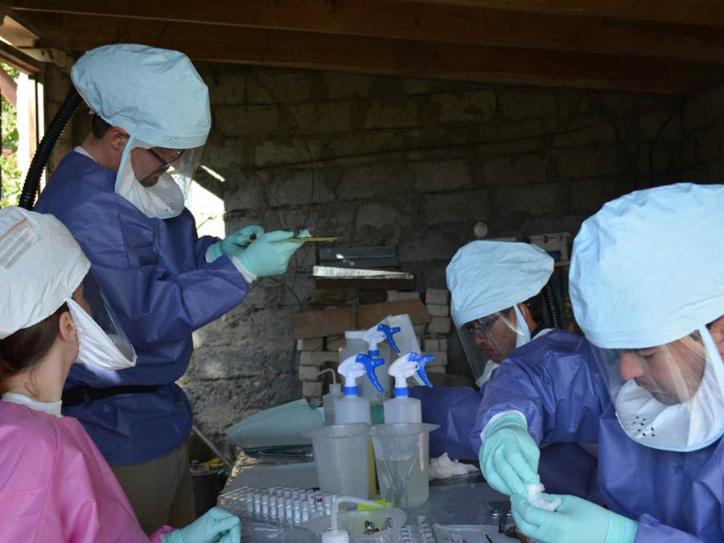

An epidemiologist is a scientist who researches the patterns and possible causes of disease outbreaks in the world before, during, and after they begin. It is an extremely specialized career, with few job offerings which are almost all from either private hospitals or the Center of Disease Control and Prevention (CDC). I want to work as an Epidemic Intelligence Service (EIS) Officer, who travels the world to research diseases in the field as they happen and find ways to prevent, treat, and stop infectious disease. To be an EIS officer, you are required to have: a doctorate degree, medical degree, post-doctoral program qualifications, and research experience. The average annual salary for an epidemiologist is $70,000.
To become an epidemiologist, I will need to be in school for a very long time:
Plan to become an Epidemiologist
- Finish high school
- Go to an undergraduate college that offers epidemiology (ie. UCLA, UCSD, UCI, UCB, Johns Hopkins) and recieve bachelors
- Gain medical experience with EMT/Paramedic/Emergency Medicine
- Go to graduate school for master's in public health, microbiology, or epidemiology depending on course offerings
- Do research with college at a laboratory or work
- Go to medical school
- Since I don't plan to practice as a doctor, I won't do a residency
- Study for doctorate degree in whichever masters speciality
- Apply for CDC post-doctorate programs
- Work for the CDC
The CDC is the main employer of epidemiologists and are the frontline of global disease control
